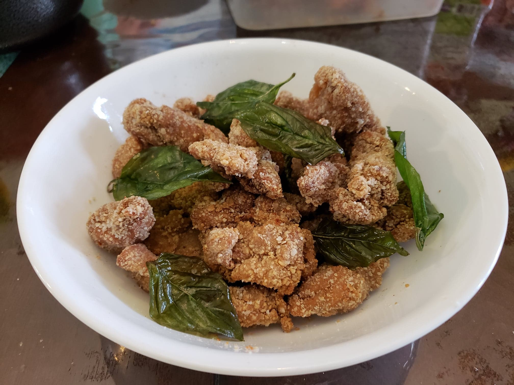

Taiwanese Popcorn Chicken

Ingredients:
Marinade:
- 1 1/2 lb Chicken thighs, boneless, skinless, cut into bite size chunks
- 2 tbsp Cornstarch
- 1 tbsp Soy sauce
- 1 tsp Chinese five-spice powder
- 1 tsp Sugar
- 1 tsp Ginger, grated
- 1 tsp Salt
- 3 cloves Garlic, grated
- 1/2 tsp Onion powder
- 1 Egg white
- 1 tbsp Shaoxing wine
Other Ingredients:
- 1 cup Sweet potato starch, thick, or as needed
- Vegetable oil for frying
- Jiao yan, to taste
- 1 cup Thai basil leaves
Instructions:
- Combine the marinade ingredients and let marinate overnight.
- Coat the pieces of chicken in the sweet potato starch. Let rest for 5 minutes.
- In a wok or pot, heat about two inches of oil to 350 degrees Fahrenheit. Fry the chicken in batches for 2-3 minutes, then remove the chicken.
- Remove the wok or pot from heat and carefully add the thai basil leaves. Fry the basil for 30 seconds before removing.
- Sprinkle the chicken with jiao yan to taste and garnish with the fried basil.